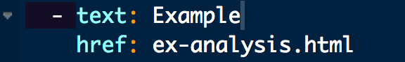

Last updated: 2020-05-01
Checks: 7 0
Knit directory: lab_tutorial/
This reproducible R Markdown analysis was created with workflowr (version 1.6.1). The Checks tab describes the reproducibility checks that were applied when the results were created. The Past versions tab lists the development history.
Great! Since the R Markdown file has been committed to the Git repository, you know the exact version of the code that produced these results.
Great job! The global environment was empty. Objects defined in the global environment can affect the analysis in your R Markdown file in unknown ways. For reproduciblity it’s best to always run the code in an empty environment.
The command set.seed(20200429) was run prior to running the code in the R Markdown file. Setting a seed ensures that any results that rely on randomness, e.g. subsampling or permutations, are reproducible.
Great job! Recording the operating system, R version, and package versions is critical for reproducibility.
Nice! There were no cached chunks for this analysis, so you can be confident that you successfully produced the results during this run.
Great job! Using relative paths to the files within your workflowr project makes it easier to run your code on other machines.
Great! You are using Git for version control. Tracking code development and connecting the code version to the results is critical for reproducibility.
The results in this page were generated with repository version ef9970c. See the Past versions tab to see a history of the changes made to the R Markdown and HTML files.
Note that you need to be careful to ensure that all relevant files for the analysis have been committed to Git prior to generating the results (you can use wflow_publish or wflow_git_commit). workflowr only checks the R Markdown file, but you know if there are other scripts or data files that it depends on. Below is the status of the Git repository when the results were generated:
Ignored files:
Ignored: .DS_Store
Ignored: .Rhistory
Ignored: .Rproj.user/
Note that any generated files, e.g. HTML, png, CSS, etc., are not included in this status report because it is ok for generated content to have uncommitted changes.
These are the previous versions of the repository in which changes were made to the R Markdown (analysis/workflow.Rmd) and HTML (docs/workflow.html) files. If you’ve configured a remote Git repository (see ?wflow_git_remote), click on the hyperlinks in the table below to view the files as they were in that past version.
| File | Version | Author | Date | Message |
|---|---|---|---|---|
| Rmd | ef9970c | ryurko | 2020-05-01 | Change the theme and nav bar |
| html | b7c655c | ryurko | 2020-05-01 | Build site. |
| Rmd | d7bb6a4 | ryurko | 2020-05-01 | Update image sizes with include graphics option and modify histogram |
| html | b5f2715 | ryurko | 2020-05-01 | Build site. |
| html | f93481e | ryurko | 2020-05-01 | Build site. |
| Rmd | 3bebdd9 | ryurko | 2020-05-01 | Create working site with initial walkthrough and examples |
You can create a new analysis .Rmd file manually or using the workflowr package:
wflow_open("analysis/ex-analysis.Rmd")Once you have made your file and edits, the workflow follows the same steps each time:
wflow_build(),wflow_publish(),wflow_git_push().If you are collaborating on the project then you should obviously follow the Git tenet: commit, pull, push. You can pull updates from collaborators via wflow_git_pull().
In order to access the new analysis HTML file on the site, you need a link to it somehow. You can just use a link on a page in markdown. Or you can modify the _site.yml directly to add a new tab.

You can change the theme with _site.yml, or take direct control using a custom CSS file to modify the appearance of your site as you wish.
Following any updates to _site.yml, or cosmetic changes that affect all HTML files you will need to use the republish = TRUE argument when publishing the updated site:
wflow_publish("analysis/_site.yml", "Change the theme and nav bar",
republish = TRUE)My recommendation is to pick the stylistic settings and type of content you want to enable easy navigation to early. Any change you make to style or navigation affects the HTML pages for every analysis file. Meaning you will have to re-build all files each time regardless of when that analysis was done before, which could take considerable time to re-run.
Also, you cannot directly use R Notebooks in the way of generating chunk output and easily uploading the resulting HTML. You still need to build the HTML files each time as in traditional R Markdown knitting. Because of this, I recommend performing time consuming tasks outside of the analysis/ folder files. Instead use traditional scripts in the code/ folder to pre-process, fit time consuming models, etc. Then you can use summaries / smaller dataset to display results or figures in the analysis/ files. Additionally, you can also display figures by creating another sub-folder (e.g. assets/) in the docs/ (or public/ for GitLab) folder and referencing figures that way.
sessionInfo()R version 3.5.0 (2018-04-23)
Platform: x86_64-apple-darwin15.6.0 (64-bit)
Running under: macOS Sierra 10.12.5
Matrix products: default
BLAS: /Library/Frameworks/R.framework/Versions/3.5/Resources/lib/libRblas.0.dylib
LAPACK: /Library/Frameworks/R.framework/Versions/3.5/Resources/lib/libRlapack.dylib
locale:
[1] en_US.UTF-8/en_US.UTF-8/en_US.UTF-8/C/en_US.UTF-8/en_US.UTF-8
attached base packages:
[1] stats graphics grDevices utils datasets methods base
loaded via a namespace (and not attached):
[1] workflowr_1.6.1 Rcpp_1.0.3 rprojroot_1.3-2 digest_0.6.23
[5] later_0.8.0 R6_2.4.1 backports_1.1.5 git2r_0.26.1
[9] magrittr_1.5 evaluate_0.14 stringi_1.4.3 fs_1.3.2
[13] promises_1.0.1 whisker_0.3-2 rmarkdown_1.13 tools_3.5.0
[17] stringr_1.4.0 glue_1.3.1 httpuv_1.5.1 xfun_0.7
[21] yaml_2.2.0 compiler_3.5.0 htmltools_0.3.6 knitr_1.23